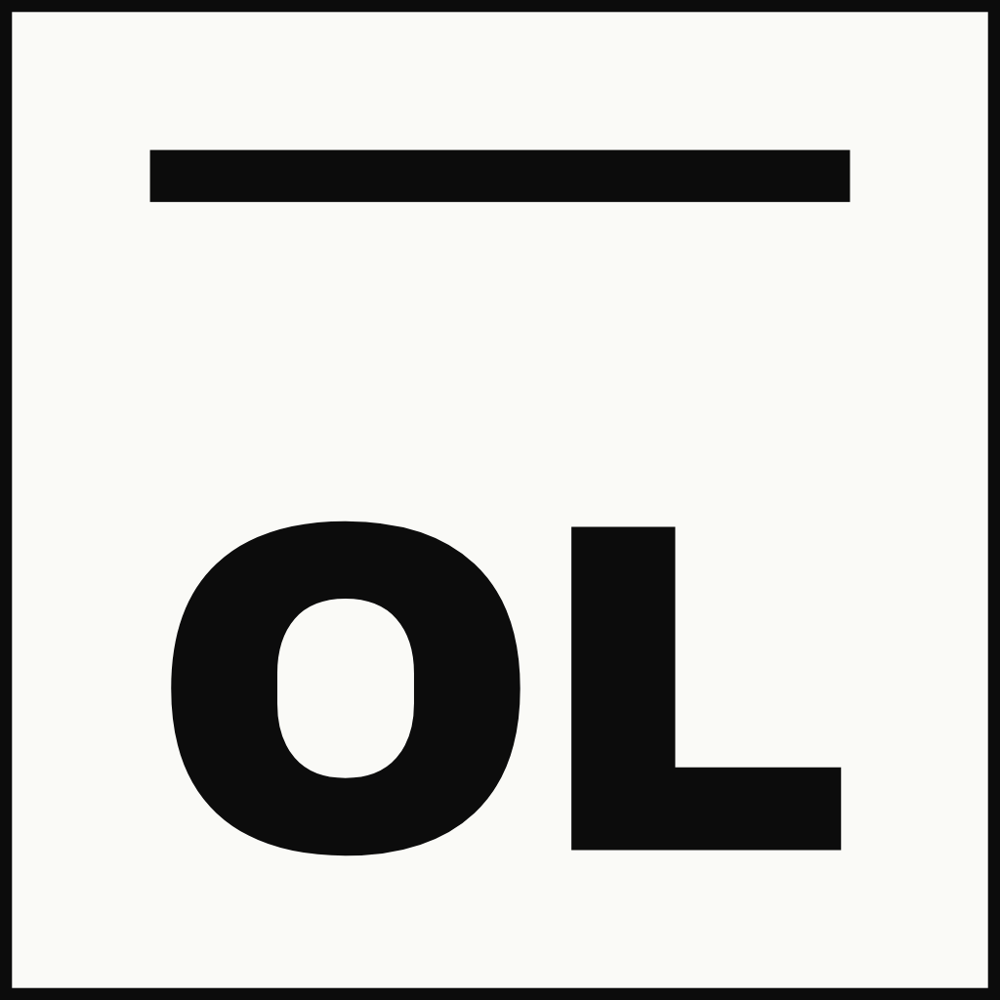

TouchScale
500 Hours of Human Vision and Touch for Visual–Tactile Learning
- 1 Texas A&M University
- 2 Google DeepMind
- 3 CMU
- 4 Stanford University
- 5 Yale University
- 6 Microsoft
- 7 Overfit Lab
- 8 NVIDIA
- 9 University of Liverpool
- 10 Meta
- 11 University of Washington
- 12 Northwestern University
- 13 Sony
- 14 Georgia Tech
- 15 UC Berkeley
* Equal contribution† Corresponding author




Human vision and touch
Policy rollout
TouchScale bridges human visual–tactile data and robot skill learning.
What Does Scaling Touch Unlock?
22.5%57.5%
Robot task success
+35 percentage points across four tasks
+35.1%
Contact IoU improvement
Zero-shot transfer on EgoTactile
+43.7%
MECCANO action recognition
vs. EgoTouch · 20.16% → 28.97%
(a) Robot success scaling
(b) Zero-shot contact IoU ↑
Resources
Data Collection Setup
A unified wearable setup captures synchronized vision and touch.
A head-mounted RGB-D camera ① records the overall interaction, while two wrist-mounted RGB cameras ② provide detailed views of hand–object contact. Both record at 30 Hz.
Bimanual tactile gloves ③ each contain 880 sensing taxels across the five fingers and palm, with spatial resolution below 2 mm. The sequence below shows time-aligned observations before contact, during wringing, and after release.
A head-mounted RGB-D camera ① records the overall interaction, while two wrist-mounted RGB cameras ② provide detailed views of hand–object contact. Both record at 30 Hz.
Bimanual tactile gloves ③ each contain 880 sensing taxels across the five fingers and palm, with spatial resolution below 2 mm. The sequence below shows time-aligned observations before contact, during wringing, and after release.
Scale and Task Diversity
500 hours across laboratories, kitchens, workbenches, and everyday environments.
Data Samples
Explore contact-rich interactions across everyday settings. Each video pairs an egocentric view with synchronized wrist cameras and bimanual tactile measurements, available under “All sensors.”
Real-World Robot Experiments
From human visual–tactile recordings to contact-rich robot manipulation.
We use an xArm6 arm with a BrainCo Revo 2 robotic hand, tactile sensing, and ego-view and wrist cameras. A VR headset and motion-capture gloves support demonstration collection.
TouchScale mid-training teaches the policy to predict future tactile changes before robot post-training. In the paper’s evaluation, both variants use 50 demonstrations per task and 20 evaluation trials per task.
We use an xArm6 arm with a BrainCo Revo 2 robotic hand, tactile sensing, and ego-view and wrist cameras. A VR headset and motion-capture gloves support demonstration collection.
TouchScale mid-training teaches the policy to predict future tactile changes before robot post-training. In the paper’s evaluation, both variants use 50 demonstrations per task and 20 evaluation trials per task.
(1) Bottle-Cap Removal
Task: Remove the cap and release it into the tray.
Policy rollout
Policy rollout
(2) Test-Tube Transfer
Task: Move the test tube to another rack slot and release it.
Policy rollout
Policy rollout
(3) Whiteboard Wipe
Task: Grasp the cloth and erase the mark on the board.
Policy rollout
Policy rollout
(4) Soft / Hard Sorting
Task: Identify the soft object.
Policy rollout
Policy rollout